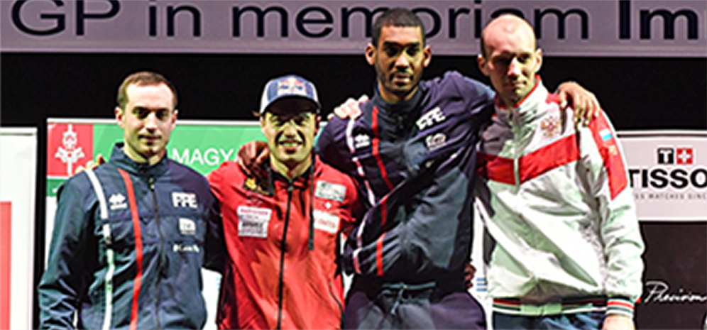
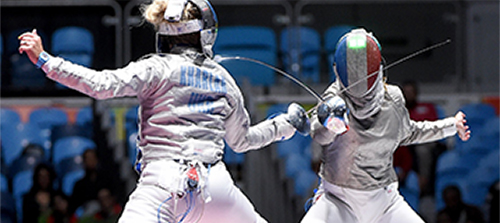
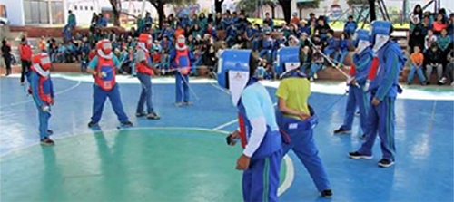

Menu
Menu
Countdown to the 2018
World Championship
News
 25 Mar 2018 Switzerland’s Heinzer, Italy’s Navarria Take Gold at 2018 Westend Epee Fencing Grand Prix in Budapest BUDAPEST, Hungary, March 23-25, 2018—Swiss fencer Max Heinzer won his fourth international fencing Grand Prix this weekend at the Westend Epee Grand Prix in Budapest, Hungary to add to his six World Cup wins →  08 Mar 2018 International Women's Day - IOC setting the stage for lasting change in sport In support of today’s International Women’s Day and the call to action to #pressforprogress, the International Olympic Committee (IOC) is launching today an overview of 25 key →  08 Mar 2018 International Women's Day - IOC setting the stage for lasting change in sport In support of today’s International Women’s Day and the call to action to #pressforprogress, the International Olympic Committee (IOC) is launching today an overview of 25 key → View all news →Top Ranked Fencers
Epee
Foil
Sabre
Results & Competitions
Upcoming Competitions
| Competition | Date | Weapon | Gender | Cat |
|---|---|---|---|---|
| Buenos AiresJOJ 2018 | 2018-10-07 | sabre | M | c |
| Buenos AiresJOJ 2018 | 2018-10-07 | foil | M | c |
| LivornoChampionnats du monde vétérans 50-59 | 2018-10-07 | foil | M | c |
| LivornoChampionnats du monde vétérans 50-59 | 2018-10-07 | foil | M | c |
| LivornoChampionnats du monde vétérans 50-59 | 2018-10-07 | foil | M | c |
| LivornoChampionnats du monde vétérans 50-59 | 2018-10-07 | foil | M | c |
Latest Results
| Competition | Date | Weapon | Gender | Cat |
|---|---|---|---|---|
| Buenos AiresJOJ 2018 | 2018-10-07 | sabre | M | c |
| Buenos AiresJOJ 2018 | 2018-10-07 | foil | M | c |
| LivornoChampionnats du monde vétérans 50-59 | 2018-10-07 | foil | M | c |
| LivornoChampionnats du monde vétérans 50-59 | 2018-10-07 | foil | M | c |
| LivornoChampionnats du monde vétérans 50-59 | 2018-10-07 | foil | M | c |
| LivornoChampionnats du monde vétérans 50-59 | 2018-10-07 | foil | M | c |
FIE YouTube
Olympic channel